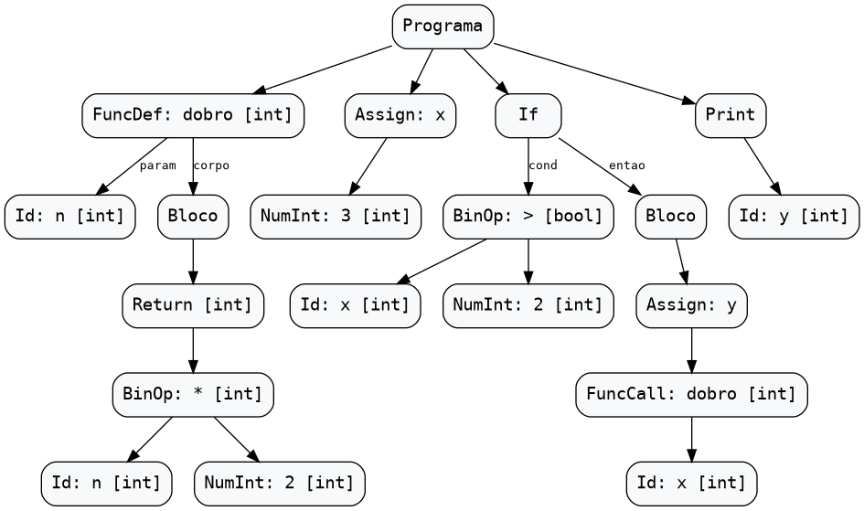

Vida de um Programa no Compilador
Este documento acompanha um único programa Python por todas as fases do compilador — da leitura dos caracteres no Lexer, passando pela redução das regras no Parser, construção da AST, gerenciamento de escopos na Tabela de Símbolos e validação na Análise Semântica.
Programa de Exemplo
def dobro(n):
return n * 2
x = 3
if x > 2:
y = dobro(x)
print(y)
1. Análise Léxica (Lexer)
A análise léxica é a primeira fase do processo de compilação. Sua função é ler o código-fonte, identificar as sequências de caracteres que formam as unidades léxicas da linguagem e classificá-las em tokens. Esses tokens são enviados ao analisador sintático, responsável por verificar se a sequência obedece às regras gramaticais da linguagem. O componente responsável por essa tarefa é chamado de analisador léxico, também conhecido como lexer ou scanner. Essa tarefa pode ser dividida em algumas etapas:
Leitura de caracteres
- Ele analisa cada caractere do código-fonte (um fluxo de texto). Nessa leitura, ocorre a remoção de caracteres irrelevantes, como espaços em branco ou comentários. Entretanto, esse comportamento depende das regras da linguagem.
Agrupamento e classificação
- Enquanto ocorre a leitura, o analisador agrupa os caracteres relevantes em lexemas e os classifica, gerando uma lista de tokens, que são os símbolos processados pelas demais etapas.
Reconhecimento e classificação dos lexemas
- Ao receber o código-fonte como um fluxo de caracteres, o analisador léxico identifica as sequências que correspondem aos padrões definidos pela linguagem, classificando-as e gerando os tokens correspondentes. Além disso, pode ignorar elementos que não precisam ser enviados às próximas etapas, como espaços em branco e comentários, dependendo das regras da linguagem. No Python, entretanto, nem todo espaço em branco é irrelevante, pois a indentação determina a estrutura dos blocos de código. Por isso, o analisador léxico pode gerar tokens específicos, como
INDENTeDEDENT, que representam, respectivamente, o aumento e a diminuição do nível de indentação.
Conceitos
Dessa forma, pode-se definir três tipos de relacionamentos ao implementar um analisador léxico:
- Lexema: é uma sequência de caracteres de um programa-fonte, como uma palavra. Cada conjunto de caracteres forma um símbolo válido de uma linguagem de programação. O lexema pode ser também um único caractere.
- Por exemplo, em
int x = 5, os lexemas encontrados são:int,x,=,5. - Padrão: descrição da forma que os lexemas podem assumir, ou seja, a maneira como se pode escrever os lexemas no programa. Funciona como as regras do que é aceito ou não. Dessa forma, uma sequência de caracteres forma uma palavra reservada ou um identificador (os caracteres que formam nomes de variáveis ou funções...).
- Token: resultado da classificação. Se o lexema segue um padrão válido, ele se torna um token, possuindo um nome e um atributo. É um símbolo que representa uma unidade léxica. A palavra
if, por exemplo, segue um padrão formado pelos caracteresief. O analisador possui uma regra na qual um lexema que reúne esses caracteres gera um token de palavra reservada que representa uma seleção. Já a variávelsomasegue um padrão de palavras formadas por um conjunto de caracteres, podendo ser um identificador. Além disso, essa unidade pode ser, por exemplo: palavras reservadas, identificadores, números...
| Token | Padrão | Lexema | Descrição |
|---|---|---|---|
while |
sequência: w, h, i, l, e | while |
Palavra reservada |
numero, 18 |
Dígitos numéricos | 18 |
Constante numérica |
Os tokens podem ser divididos em dois grupos:
- Tokens simples: eles possuem um valor associado, já descrito na própria classe, como operadores ou palavras reservadas.
- Tokens com argumentos: possuem um valor associado, como
<numero, 10>ou<id, 3>.
Possuindo uma estrutura de <nome-token, valor-atributo>.
Tomando o exemplo principal como base:
def dobro(n):
return n * 2
x = 3
if x > 2:
y = dobro(x)
print(y)
A análise léxica deste arquivo pode gerar a seguinte sequência de tokens simplificada (omite alguns tokens de estrutura):
<def, def>
<id, dobro>
<abre_parentese, (>
<id, n>
<fecha_parentese, )>
<dois_pontos, :>
<return, return>
<id, n>
<operador_multiplicacao, *>
<numero, 2>
<id, x>
<igual, =>
<numero, 3>
<if, if>
<id, x>
<maior, >>
<numero, 2>
<dois_pontos, :>
<id, y>
<igual, =>
<id, dobro>
<abre_parentese, (>
<id, x>
<fecha_parentese, )>
<print, print>
<abre_parentese, (>
<id, y>
<fecha_parentese, )>
Dessa forma, ao encontrar o lexema def, por exemplo, o analisador reconhece uma palavra reservada e produz um token correspondente. Essa forma de análise se dá por todo o código, com diferentes categorias. Cada implementação pode gerar a sua própria nomenclatura.
Tratamento de erros
A identificação de erros do analisador léxico é voltada principalmente para a presença de caracteres que não são válidos na linguagem. Ao encontrar um caractere problemático, deve-se emitir uma mensagem de erro contendo informações sobre o caractere e a sua posição.
2. Análise Sintática (Parser)
A análise sintática é a segunda fase do compilador. Sua função é receber o fluxo contínuo de tokens emitidos pelo analisador léxico (yylex()) e verificar se a ordem dos símbolos respeita as regras da gramática formal livre de contexto da linguagem.
Nosso compilador utiliza o GNU Bison para gerar um analisador sintático ascendente (bottom-up) do tipo LALR(1) com resolução de ambiguidades por precedência de operadores e lookahead correction (LAC — Lookahead Correction).
Funcionamento do Analisador Ascendente (Shift-Reduce)
Diferente de um analisador descendente, que tenta prever as regras a partir do símbolo inicial, o analisador do Bison opera por empilhamento e redução (shift-reduce):
1. Shift (Empilhamento): Lê o próximo token fornecido pelo lexer e empilha seu símbolo e valor semântico (yylval).
2. Reduce (Redução): Quando o topo da pilha coincide com o lado direito de uma regra gramatical, esses elementos são desempilhados e substituídos pelo não-terminal do lado esquerdo da regra, executando a ação semântica associada ({ $$ = ... }).
3. As ações semânticas em parser/parser.y chamam as funções construtoras de src/ast.c (criar_no_*), construindo a árvore sintática abstrata das folhas até a raiz.
Construção de Listas Dinâmicas no Bison
Como a análise é ascendente, o tamanho de um bloco indentado ou de uma lista de argumentos/parâmetros só é conhecido após a leitura do último item. Para gerenciar isso sem estruturas intermediárias complexas, o parser emprega duas funções auxiliares:
- criar_lista(primeiro): Cria um nó NO_BLOCO com capacidade inicial contendo o primeiro nó.
- adicionar_lista(lista, novo): Realoca dinamicamente o vetor argumentos via realloc e insere o novo nó no final.
Ao concluir uma regra composta, o nó NO_BLOCO temporário tem seus elementos transferidos para o nó definitivo (como NO_FUNCDEF, NO_IF ou NO_PROGRAMA) e sua casca é liberada com free.
Rastreamento Passo a Passo do Programa de Exemplo
Abaixo está o acompanhamento cronológico exato das regras acionadas e das chamadas criar_no_* durante a execução de yyparse() sobre o nosso programa de exemplo:
def dobro(n):
return n * 2
x = 3
if x > 2:
y = dobro(x)
print(y)
Bloco 1: Definição da Função dobro(n) (Linhas 1 e 2)
- Parâmetro Formal:
- O lexer emite
DEF,ID("dobro"),LPAREN,ID("n"). - Token
ID("n")reduz para a regraparametros: ID. - Ação: Chama
criar_no_id("n", linha)e encapsula emcriar_lista(...). - Reduz para
parametros_opt: parametros. - Consome
RPAREN,COLON,NEWLINE,INDENT. - Expressão do
return: - O lexer emite
RETURN,ID("n"). ID("n")reduz paraexpressao: ID$\rightarrow$criar_no_id("n", linha).- O lexer emite
TIMES,NUM_INT(2). NUM_INT(2)reduz paraexpressao: NUM_INT$\rightarrow$criar_no_int(2, linha).- Pela regra de precedência,
expressao TIMES expressaoreduz paraexpressao. - Ação: Dispara
criar_no_binop(OP_MULT, no_id_n, no_num_2, linha). - Comando
returne Bloco da Função: - A regra
comando_simples: RETURN expressaodisparacriar_no_return(no_binop, linha). - Consome
NEWLINE, reduzindocomando: comando_simples NEWLINE. - Reduz para
comandos: comando$\rightarrow$criar_lista(no_return). - O lexer detecta o fim da indentação e emite
DEDENT. - A regra
bloco: NEWLINE INDENT comandos DEDENTrepassa a lista com o corpo da função. - Fechamento do
def: - A regra
comando_composto: DEF ID LPAREN parametros_opt RPAREN COLON blocoé reduzida. - Ação: Dispara
criar_no_funcdef("dobro", params, 1, bloco, linha). - Reduz para
comando: comando_composto, e em seguida paracomandos: comando(iniciando a lista do escopo global).
Bloco 2: Atribuição x = 3 (Linha 3)
- O lexer emite
ID("x"), que reduz paraexpressao: ID$\rightarrow$criar_no_id("x", linha). - O lexer emite
ASSIGN,NUM_INT(3). NUM_INT(3)reduz paraexpressao: NUM_INT$\rightarrow$criar_no_int(3, linha).- A regra
expressao: expressao ASSIGN expressaoé reduzida. - O parser extrai o nome
"x"do nó à esquerda e disparacriar_no_assign("x", no_num_3, linha). - Reduz para
comando_simples: expressao. - Consome
NEWLINE, reduz paracomando: comando_simples NEWLINE. - A regra recursiva
comandos: comandos comandoacionaadicionar_lista(lista_global, no_assign_x).
Bloco 3: Condicional if x > 2: e Chamada y = dobro(x) (Linhas 4 e 5)
- Condição do
if: - O lexer emite
IF,ID("x").ID("x")reduz paraexpressao: ID$\rightarrow$criar_no_id("x", linha). - O lexer emite
GT,NUM_INT(2).NUM_INT(2)reduz paraexpressao: NUM_INT$\rightarrow$criar_no_int(2, linha). - A regra
expressao: expressao GT expressaoreduz disparandocriar_no_binop(OP_GT, no_x, no_2, linha). - Consome
COLON,NEWLINE,INDENT. - Corpo do
if(y = dobro(x)): - O lexer emite
ID("y")$\rightarrow$ reduz paraexpressao: ID(criar_no_id("y", linha)). - O lexer emite
ASSIGN,ID("dobro"),LPAREN,ID("x"). ID("x")reduz paraexpressao: ID$\rightarrow$criar_no_id("x", linha), e em seguida paraargumentos_opt.- A regra
expressao: ID LPAREN argumentos_opt RPARENreconhece a chamada de função e dispara:criar_no_funccall("dobro", args, 1, linha). - A regra
expressao: expressao ASSIGN expressaodispara:criar_no_assign("y", no_funccall, linha). - Consome
NEWLINE, reduz paracomando_simples, depoiscomando,comandos: comandoe finalmenteblocoao receberDEDENT. - Fechamento do
if: - Não há cláusulas
elifnemelse, logolista_elifesenao_optreduzem pela regra%empty(retornandoNULL). - A regra
comando_composto: IF expressao COLON bloco lista_elif senao_optdispara:criar_no_if(no_cond, bloco_then, NULL, 0, NULL, linha). - Reduz para
comando, ecomandos: comandos comandoanexa o nóNO_IFà lista global.
Bloco 4: Comando print(y) (Linha 6)
- O lexer emite
PRINT,LPAREN,ID("y"). ID("y")reduz paraexpressao: ID$\rightarrow$criar_no_id("y", linha), e depois paraargumentos_opt.- Consome
RPAREN. A regracomando_simples: PRINT LPAREN argumentos_opt RPARENdispara:criar_no_print(args, 1, linha). - Consome
NEWLINE(ou EOF), reduz paracomando, ecomandos: comandos comandoanexa o nóNO_PRINTcomo o 4º comando global.
Finalização da Gramática
- O lexer alcança o final do arquivo (
EOF). - A regra inicial
programa: comandosé acionada: - Extrai o vetor de 4 comandos contido no bloco temporário.
- Dispara
criar_no_programa($1->argumentos, 4). - Atribui o nó resultante à variável global
raiz_ast. - Executa
free($1)liberando o invólucro do bloco temporário. yyparse()retorna0com sucesso, repassandoraiz_astpara as etapas subsequentes.
Tabela Resumo das Reduções e Construtores
| Etapa | Token / Lookahead | Regra do parser.y Disparada |
Construtor em src/ast.c Invocado |
Tipo de Nó Resultante |
|---|---|---|---|---|
| 1 | ID("n") |
parametros: ID |
criar_no_id("n", linha) |
NO_ID (parâmetro) |
| 2 | ID("n") |
expressao: ID |
criar_no_id("n", linha) |
NO_ID |
| 3 | NUM_INT(2) |
expressao: NUM_INT |
criar_no_int(2, linha) |
NO_NUM_INT |
| 4 | TIMES |
expressao: expressao TIMES expressao |
criar_no_binop(OP_MULT, esq, dir, linha) |
NO_BINOP (*) |
| 5 | RETURN |
comando_simples: RETURN expressao |
criar_no_return(expr, linha) |
NO_RETURN |
| 6 | NEWLINE / DEDENT |
bloco: NEWLINE INDENT comandos DEDENT |
(repassa lista de comandos) | NO_BLOCO (corpo) |
| 7 | DEF ... bloco |
comando_composto: DEF ID (...) COLON bloco |
criar_no_funcdef("dobro", params, 1, bloco, linha) |
NO_FUNCDEF |
| 8 | ID("x") |
expressao: ID |
criar_no_id("x", linha) |
NO_ID |
| 9 | NUM_INT(3) |
expressao: NUM_INT |
criar_no_int(3, linha) |
NO_NUM_INT |
| 10 | ASSIGN |
expressao: expressao ASSIGN expressao |
criar_no_assign("x", expr, linha) |
NO_ASSIGN |
| 11 | ID("x") |
expressao: ID |
criar_no_id("x", linha) |
NO_ID |
| 12 | NUM_INT(2) |
expressao: NUM_INT |
criar_no_int(2, linha) |
NO_NUM_INT |
| 13 | GT |
expressao: expressao GT expressao |
criar_no_binop(OP_GT, esq, dir, linha) |
NO_BINOP (>) |
| 14 | ID("x") |
expressao: ID |
criar_no_id("x", linha) |
NO_ID |
| 15 | ID("dobro") |
expressao: ID LPAREN args RPAREN |
criar_no_funccall("dobro", args, 1, linha) |
NO_FUNCCALL |
| 16 | ASSIGN |
expressao: expressao ASSIGN expressao |
criar_no_assign("y", expr, linha) |
NO_ASSIGN |
| 17 | IF ... bloco |
comando_composto: IF expr COLON bloco ... |
criar_no_if(cond, bloco, NULL, 0, NULL, linha) |
NO_IF |
| 18 | PRINT |
comando_simples: PRINT LPAREN args RPAREN |
criar_no_print(args, 1, linha) |
NO_PRINT |
| 19 | EOF |
programa: comandos |
criar_no_programa(cmds, 4) |
NO_PROGRAMA (Raiz) |
3. Árvore Sintática Abstrata (AST)
Após o yyparse() concluir as reduções sintáticas de baixo para cima (bottom-up), a variável global raiz_ast aponta para o nó raiz NO_PROGRAMA, que reúne os 4 comandos de topo no vetor raiz_ast->argumentos (num_argumentos = 4):
argumentos[0]— Definição de função (NO_FUNCDEF: dobro):nome:"dobro"argumentos[0](parâmetro):NO_ID ("n"), anotado comTIPO_INT(tipo inferido pelo uso no corpo).bloco_if(corpo da função):NO_BLOCOcontendo um único comandoNO_RETURN, cujo filhoesquerdaé a expressão bináriaNO_BINOP (OP_MULT: *)([int]) ligandoNO_ID ("n")(à esquerda) eNO_NUM_INT (2)(à direita).argumentos[1]— Atribuição (NO_ASSIGN: x):nome:"x"esquerda: literalNO_NUM_INT (3)anotado pela semântica comtipo_resolvido = TIPO_INT.argumentos[2]— Condicional (NO_IF):condicao:NO_BINOP (OP_GT: >)comparandoNO_ID ("x")([int]) eNO_NUM_INT (2)([int]), anotado comtipo_resolvido = TIPO_BOOL.bloco_if(ramoentao):NO_BLOCOcontendoNO_ASSIGN ("y"), cujo filhoesquerdaé a chamadaNO_FUNCCALL ("dobro")([int], o tipo de retorno dedobro) passandoNO_ID ("x")([int]) emargumentos[0].bloco_else:NULL(enum_argumentos = 0, pois não há cláusulaselif).argumentos[3]— Comando de saída (NO_PRINT):argumentos[0]:NO_ID ("y")([int]).
Saída Textual (--ast)
Executando o compilador com a flag --ast:
./compilador --ast < exemplo.py
Obtemos a árvore indentada com os tipos resolvidos anotados entre colchetes ([int], [bool]):
Programa
FuncDef: dobro [int]
Params:
Id: n [int]
Corpo:
Bloco
Return [int]
BinOp: * [int]
Id: n [int]
NumInt: 2 [int]
Assign: x
NumInt: 3 [int]
If
Cond:
BinOp: > [bool]
Id: x [int]
NumInt: 2 [int]
Entao:
Bloco
Assign: y
FuncCall: dobro [int]
Id: x [int]
Print
Id: y [int]
Visualização Gráfica (--dot)
Executando o compilador com a flag --dot:
./compilador --dot < exemplo.py > exemplo.dot && dot -Tpng exemplo.dot -o docs/img/ast_vida_programa.png
O módulo src/ast.c exporta os 20 nós (n0 a n19) no formato Graphviz DOT e renderiza a árvore final abaixo:

Ver código Graphviz DOT gerado por ast_para_dot
digraph AST {
node [shape=box, style="rounded,filled", fillcolor="#f8f9fa", fontname="monospace"];
edge [fontname="monospace", fontsize=10];
n0 [label="Programa"];
n1 [label="FuncDef: dobro [int]"];
n2 [label="Id: n [int]"];
n1 -> n2 [label="param"];
n3 [label="Bloco"];
n4 [label="Return [int]"];
n5 [label="BinOp: * [int]"];
n6 [label="Id: n [int]"];
n7 [label="NumInt: 2 [int]"];
n5 -> n6;
n5 -> n7;
n4 -> n5;
n3 -> n4;
n1 -> n3 [label="corpo"];
n0 -> n1;
n8 [label="Assign: x"];
n9 [label="NumInt: 3 [int]"];
n8 -> n9;
n0 -> n8;
n10 [label="If"];
n11 [label="BinOp: > [bool]"];
n12 [label="Id: x [int]"];
n13 [label="NumInt: 2 [int]"];
n11 -> n12;
n11 -> n13;
n10 -> n11 [label="cond"];
n14 [label="Bloco"];
n15 [label="Assign: y"];
n16 [label="FuncCall: dobro [int]"];
n17 [label="Id: x [int]"];
n16 -> n17;
n15 -> n16;
n14 -> n15;
n10 -> n14 [label="entao"];
n0 -> n10;
n18 [label="Print"];
n19 [label="Id: y [int]"];
n18 -> n19;
n0 -> n18;
}
4. Tabela de Símbolos
A Tabela de Símbolos gerencia os identificadores (variáveis e funções) e assegura a visibilidade e compatibilidade de tipos durante a Análise Semântica.
Ela é mantida em um array dinâmico contíguo (Simbolo* array_simbolos) operado como pilha. A busca de nomes (tabela_buscar) é feita por varredura reversa (i = tamanho - 1 até 0). Conforme definido na resolução da Issue #45, para respeitar a semântica do Python, blocos de controle de fluxo (if, for, while) não criam novos escopos. Portanto, chamadas a tabela_entrar_escopo() e tabela_sair_escopo() ocorrem exclusivamente na definição de funções (NO_FUNCDEF).
Abaixo é apresentado o rastreio do estado do array_simbolos ao longo do programa de exemplo.
Estado 0: Inicialização do Escopo Global (escopo_atual = 0)
O compilador inicializa a tabela alocando capacidade para 10 símbolos.
- Ação:
tabela_criar() - Estado Interno:
escopo_atual = 0,tamanho = 0,capacidade = 10
| Índice | Nome | Tipo | Escopo | Linha | É Função? | Detalhes |
|---|---|---|---|---|---|---|
| - | (vazia) | - | - | - | - | Nenhum símbolo registrado |
Estado 1: Pré-registro de dobro e Escopo de Parâmetro (escopo_atual = 1)
Ao processar o programa:
1. Antes de visitar qualquer comando, pre_registrar_funcoes insere dobro no escopo 0 como função (por isso uma chamada pode vir antes do def, Issue #49).
2. Ao chegar no def dobro(n):, tabela_entrar_escopo() incrementa escopo_atual para 1.
3. O parâmetro n é registrado no escopo 1, ainda sem tipo.
- Ação:
tabela_inserir("dobro")->tabela_entrar_escopo()->tabela_inserir("n") - Estado Interno:
escopo_atual = 1,tamanho = 2
| Índice | Nome | Tipo | Escopo | Linha | É Função? | Detalhes |
|---|---|---|---|---|---|---|
[0] |
dobro |
TIPO_DESCONHECIDO |
0 | 1 | true |
num_parametros = 1, parâmetros (desconhecido) |
[1] |
n |
TIPO_DESCONHECIDO |
1 | 1 | false |
Parâmetro formal de dobro |
Estado 2: Análise do Corpo de dobro (escopo_atual = 1)
O corpo da função é um NO_BLOCO, que não abre escopo (Issue #45): o return n * 2 é analisado no próprio escopo 1. Na expressão n * 2, o operando 2 é TIPO_INT, e o parâmetro n, que estava sem tipo, passa a ser TIPO_INT (Issue #52). O retorno da função também fica TIPO_INT.
- Ação: nenhuma inserção;
ntem o tipo atualizado - Estado Interno:
escopo_atual = 1,tamanho = 2
| Índice | Nome | Tipo | Escopo | Linha | É Função? | Detalhes |
|---|---|---|---|---|---|---|
[0] |
dobro |
TIPO_DESCONHECIDO |
0 | 1 | true |
Visível via busca reversa |
[1] |
n |
TIPO_INT |
1 | 1 | false |
Tipo inferido pelo uso em n * 2 |
Estado 3: Saída da Função dobro (escopo_atual = 0)
Ao término do corpo da função:
1. O tipo de n é copiado para a assinatura de dobro: parâmetros (int).
2. tabela_sair_escopo() desempilha n do índice 1 (free) e retorna ao escopo_atual = 0.
3. dobro recebe o tipo de retorno inferido: TIPO_INT.
- Ação:
tabela_sair_escopo() - Estado Interno:
escopo_atual = 0,tamanho = 1
| Índice | Nome | Tipo | Escopo | Linha | É Função? | Detalhes |
|---|---|---|---|---|---|---|
[0] |
dobro |
TIPO_INT |
0 | 1 | true |
Mantido no escopo global, parâmetros (int) |
Estado 4: Atribuição Global x = 3 (escopo_atual = 0)
O compilador registra x no escopo global.
- Ação:
tabela_inserir("x", TIPO_INT, linha 3) - Estado Interno:
escopo_atual = 0,tamanho = 2
| Índice | Nome | Tipo | Escopo | Linha | É Função? | Detalhes |
|---|---|---|---|---|---|---|
[0] |
dobro |
TIPO_INT |
0 | 1 | true |
num_parametros = 1 |
[1] |
x |
TIPO_INT |
0 | 3 | false |
Literal 3 inferido como TIPO_INT |
Estado 5: Execução do if e Atribuição de y (escopo_atual = 0)
Ao processar if x > 2:, a condição consulta x no índice 1. Como o if não abre novo escopo, o comando y = dobro(x) insere y diretamente no escopo 0, com o tipo de retorno de dobro (TIPO_INT).
- Ação:
tabela_inserir("y", TIPO_INT, linha 5) - Estado Interno:
escopo_atual = 0,tamanho = 3
| Índice | Nome | Tipo | Escopo | Linha | É Função? | Detalhes |
|---|---|---|---|---|---|---|
[0] |
dobro |
TIPO_INT |
0 | 1 | true |
Escopo Global |
[1] |
x |
TIPO_INT |
0 | 3 | false |
Escopo Global |
[2] |
y |
TIPO_INT |
0 | 5 | false |
Inserida no escopo global (vazamento de escopo) |
Estado 6: Consulta e Execução do print(y) (escopo_atual = 0)
No comando final print(y):
- O compilador executa
tabela_buscar(tab, "y"). - A varredura reversa inicia no índice
2(tamanho - 1). - Localiza
yno índice2com tipoTIPO_INT. -
A verificação semântica é concluída sem erros.
-
Resultado: O programa compila com sucesso e a execução gera o resultado esperado:
6.
Rastreio Sintético de Chamadas
tabela_criar() -> tamanho = 0, escopo_atual = 0
tabela_inserir("dobro", ..., 1) -> array[0] = { "dobro", esc: 0 } (pré-registro)
tabela_entrar_escopo() -> escopo_atual = 1
tabela_inserir("n", ..., 1) -> array[1] = { "n", esc: 1 }
(n * 2) -> n.tipo = TIPO_INT
tabela_sair_escopo() -> free("n"), tamanho = 1, escopo_atual = 0
dobro: tipo TIPO_INT, parâmetros (int)
tabela_inserir("x", TIPO_INT, 3) -> array[1] = { "x", esc: 0 }
tabela_inserir("y", TIPO_INT, 5) -> array[2] = { "y", esc: 0 }
tabela_buscar("y") -> Encontra 'y' no índice 2 -> Sucesso!
5. Análise Semântica
A análise semântica começa no main (parser/parser.y), depois que yyparse() termina sem erros sintáticos:
TabelaSimbolos *tabela = tabela_criar();
int erros_semanticos = analisar_semantica(raiz_ast, tabela);
Ela recebe a AST pronta (raiz_ast) e uma tabela de símbolos vazia (escopo 0). Duas funções de src/semantica.c fazem o trabalho:
analisar_semantica(no, tabela)percorre os comandos: declara variáveis e funções na tabela, abre e fecha o escopo das funções, validareturne condições. Retorna o número de erros.inferir_tipo(no, tabela, &erros)avalia uma expressão de baixo para cima, devolve oTipoDadodela e grava o resultado emno->tipo_resolvido.
A sequência abaixo é a ordem real das chamadas para o programa de exemplo. A indentação mostra quem chamou quem, e [esc=N] é o escopo_atual da tabela no momento da chamada.
5.1 Raiz: Programa
analisar_semantica(Programa) [esc=0]
pre_registrar_funcoes(Programa)
tabela_inserir(dobro, DESCONHECIDO, escopo 0) e_funcao = true, num_parametros = 1
O ramo NO_PROGRAMA faz duas passadas:
pre_registrar_funcoespercorre os comandos de topo e insere cadadefna tabela antes de qualquer análise. Assim uma chamada pode aparecer antes da definição (issue #49).dobroentra compre_registrada = trueetipos_parametros = {DESCONHECIDO}.- Depois, cada comando em
argumentos[]é analisado em ordem:FuncDef,Assign,If,Print.
NO_PROGRAMAnão abre escopo: o nível global é o escopo 0, criado portabela_criar().
5.2 def dobro(n): return n * 2
analisar_semantica(FuncDef(dobro)) [esc=0]
tabela_buscar_escopo_atual(dobro) -> pré-registrada pre_registrada = false
tabela_entrar_escopo -> 1
tabela_inserir(n, DESCONHECIDO, escopo 1)
pre_registrar_funcoes(Bloco) nenhum def aninhado
analisar_semantica(Bloco) [esc=1]
analisar_semantica(Return) [esc=1]
inferir_tipo(BinOp *) -> INT
inferir_tipo(Id n) -> DESCONHECIDO
inferir_tipo(NumInt 2) -> INT
n.tipo = INT inferido pelo outro operando
dobro.tipos_parametros = {INT}
tabela_sair_escopo (1) remove n
dobro.tipo = tipo_retorno_atual = INT
O que acontece no ramo NO_FUNCDEF:
dobrojá está na tabela por causa do pré-registro, então só é desmarcada como pré-registrada. Se o nome já existisse como função ou variável não pré-registrada, seria erro de redeclaração (issue #50).- As flags de contexto são salvas e trocadas:
dentro_de_funcao = trueetipo_retorno_atual = VOID. - Abre-se o escopo 1 e os parâmetros são inseridos nele. Como o parâmetro não tem anotação de tipo,
nentra comoDESCONHECIDO. - O corpo é um
NO_BLOCO, que não abre escopo (issue #45). Uma função ocupa um único nível de escopo, o 1. - No
NO_RETURN,dentro_de_funcaoé verdadeiro, então não há erro de "return fora de função". O tipo da expressão é inferido: n→DESCONHECIDO(o tipo que está na tabela);2→INT;- em
n * 2, o operando conhecido (INT) define o tipo do parâmetro sem tipo:npassa aINTna tabela e no nó (issue #52). Com doisINT, o resultado éINT. - Como
tipo_retorno_atualainda eraVOID, ele passa a ser o tipo destereturn(INT). - O tipo final de
né copiado paratipos_parametrose para o nó do parâmetro. Depois o escopo 1 é fechado (nsai da tabela),dobro.tiporecebe o tipo de retorno e as flags voltam aos valores salvos.
Tabela ao fim do def:
| Nome | Tipo | Escopo | Função? |
|---|---|---|---|
dobro |
INT | 0 | sim (parâmetros (int)) |
5.3 x = 3
analisar_semantica(Assign x) [esc=0]
inferir_tipo(NumInt 3) -> INT
tabela_inserir(x, INT, escopo 0)
No ramo NO_ASSIGN, a expressão do lado direito fica em esquerda (é assim que criar_no_assign monta o nó). O tipo dela é inferido (INT). Como não existe x no escopo atual, x é inserido. Se já existisse, valeria a política de reatribuição da ADR-001.
| Nome | Tipo | Escopo | Função? |
|---|---|---|---|
dobro |
INT | 0 | sim |
x |
INT | 0 | não |
5.4 if x > 2: y = dobro(x)
analisar_semantica(If) [esc=0]
inferir_tipo(BinOp >) -> BOOL
inferir_tipo(Id x) -> INT
inferir_tipo(NumInt 2) -> INT
analisar_semantica(Bloco) [esc=0]
analisar_semantica(Assign y) [esc=0]
inferir_tipo(FuncCall dobro) -> INT
inferir_tipo(Id x) -> INT
tabela_inserir(y, INT, escopo 0)
- Condição:
x > 2é uma comparação, então o resultado é sempreBOOL. Os operandosINT/INTnão disparam nenhum erro de comparação. Como o tipo éBOOL, a regra "a condição deve ser estritamente booleana" é satisfeita. - Bloco do
if: oNO_BLOCOnão abre escopo (issue #45). Oy = dobro(x)é analisado no escopo 0, como em Python. y = dobro(x): no ramoNO_FUNCCALLdeinferir_tipo:dobroexiste na tabela e é função;- 1 argumento para 1 parâmetro: a quantidade confere;
- o argumento
xéINT, igual ao parâmetro (INT). Nenhum erro; - o tipo da chamada é o tipo de retorno da função:
INT. yé inserido com tipoINTno escopo 0 e continua visível depois doif.
Tabela ao fim do if:
| Nome | Tipo | Escopo | Função? |
|---|---|---|---|
dobro |
INT | 0 | sim |
x |
INT | 0 | não |
y |
INT | 0 | não |
5.5 print(y)
analisar_semantica(Print) [esc=0]
inferir_tipo(Id y) -> INT
NO_PRINT tem ramo próprio em analisar_semantica, que chama inferir_tipo em cada argumento. No caso NO_ID, tabela_buscar(y) encontra o y inserido no passo 5.4, então não há erro, e o nó recebe o tipo do símbolo (INT) em tipo_resolvido. É esse tipo que o gerador C# usa para traduzir o print em Console.WriteLine.
Como os argumentos passam por inferir_tipo, uma expressão com tipos incompatíveis dentro do print também é reportada. Por exemplo, print("a" + 1) gera Erro semântico na linha 1: Operação aritmética com tipos incompatíveis. (coberto por TestesSemanticaErros12.py).
Resultado
$ ./compilador < exemplo.py
$ echo $?
0
Nenhuma mensagem e código de saída 0: o programa é aceito. Em Python, ele imprime 6.
Tipo inferido de cada expressão (tipo_resolvido)
| Linha | Expressão | Tipo | Por quê |
|---|---|---|---|
| 1 | n (parâmetro) |
INT | tipo copiado do parâmetro ao fim do def |
| 2 | n |
INT | inferido pelo outro operando de n * 2 |
| 2 | 2 |
INT | literal inteiro |
| 2 | n * 2 |
INT | INT * INT |
| 3 | 3 |
INT | literal inteiro |
| 4 | x |
INT | tipo de x na tabela |
| 4 | 2 |
INT | literal inteiro |
| 4 | x > 2 |
BOOL | toda comparação é BOOL |
| 5 | x (argumento) |
INT | tipo de x na tabela |
| 5 | dobro(x) |
INT | tipo de retorno de dobro |
| 6 | y (em print) |
INT | tipo de y na tabela (inferir_tipo, caso NO_ID) |
São esses valores que aparecem entre colchetes na saída de --ast da seção 3.
Observações do rastreio
- Cada expressão é visitada uma vez: neste exemplo, os ramos
Assign,Return,IfePrintdeanalisar_semanticachamam sóinferir_tiponas expressões, que verifica os tipos e a existência das variáveis e anota otipo_resolvidousado pelo gerador C#. Por isso uma variável não declarada gera um único erro (issue #39), e um erro de tipo dentro deprint(...)também é reportado. - Parâmetros ganham tipo pelo uso:
ncomeçaDESCONHECIDOe viraINTpor causa den * 2. A partir daí, o retorno dedobroeytambém ficamINT(issue #52). - Linha do
If: os erros da condição apontam a linha doif(linha 4), não o fim do bloco (issue #46). - Variante com
y = 0antes doif: oy = dobro(x)de dentro do bloco reatribui o mesmoydo escopo 0, sem criar um segundo símbolo, porque oifnão abre escopo.